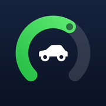

Odolim
Tenez votre quota kilométrique de leasing — iPhone
- Compare votre compteur au quota de votre contrat (LLD, LOA, leasing social, voiture de fonction) et vous dit si vous êtes sous la limite.
- Kilomètres autorisés aujourd’hui, avance ou retard, projection et coût estimé des kilomètres en trop.
- Vue par année ou sur toute la durée du contrat, plusieurs véhicules, km ou miles.
- Pas de GPS, pas de compte, gratuit : tout reste sur l’appareil.